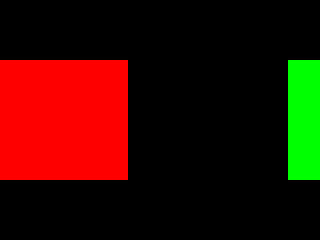

Scrolling and the Matrix Stack

Last Updated 12/21/12
When dealing with large environments, you need some sort of camera to define the area you're rendering. Here we'll save transformations to the modelview matrix to do that.From LUtil.cpp
#include "LUtil.h"
//Camera position
GLfloat gCameraX = 0.f, gCameraY = 0.f;
bool initGL()
{
//Set the viewport
glViewport( 0.f, 0.f, SCREEN_WIDTH, SCREEN_HEIGHT );
//Initialize Projection Matrix
glMatrixMode( GL_PROJECTION );
glLoadIdentity();
glOrtho( 0.0, SCREEN_WIDTH, SCREEN_HEIGHT, 0.0, 1.0, -1.0 );
//Initialize Modelview Matrix
glMatrixMode( GL_MODELVIEW );
glLoadIdentity();
//Save the default modelview matrix
glPushMatrix();
//Initialize clear color
glClearColor( 0.f, 0.f, 0.f, 1.f );
//Check for error
GLenum error = glGetError();
if( error != GL_NO_ERROR )
{
printf( "Error initializing OpenGL! %s\n", gluErrorString( error ) );
return false;
}
return true;
}
At the top of our LUtil.cpp file, we define x/y coordinates for our camera. The initGL() function is pretty much the same, only now there's a call to glPushMatrix().
In OpenGL 2.1, there's the projection and modelview matrices (along with two others you can learn about in the documentation). Each of these matrix types have a stack associated with them. You can push a copy of the current matrix onto the stack to save it for later.
In this tutorial, we are going to be applying translation tranformations to the modelview matrix to scroll the environment. This time however, instead of calling glLoadIdentity() and glOrtho() every time like we did in the Matrices and Coloring Polygons tutorial, we're going to push a copy of initial modelview matrix scrolled to the camera position onto the stack to save it for when we need to apply transformations to it. It's also considered to be a bad habit to apply camera transformations to the projection matrix as it interferes with fog and lighting calculations. We only did it in the last tutorial for the sake of simplicity.
Note: the matrix stack isn't infinitely deep. Push too many matrices onto the stack and you'll get GL_STACK_OVERFLOW from glGetError().
In OpenGL 2.1, there's the projection and modelview matrices (along with two others you can learn about in the documentation). Each of these matrix types have a stack associated with them. You can push a copy of the current matrix onto the stack to save it for later.
In this tutorial, we are going to be applying translation tranformations to the modelview matrix to scroll the environment. This time however, instead of calling glLoadIdentity() and glOrtho() every time like we did in the Matrices and Coloring Polygons tutorial, we're going to push a copy of initial modelview matrix scrolled to the camera position onto the stack to save it for when we need to apply transformations to it. It's also considered to be a bad habit to apply camera transformations to the projection matrix as it interferes with fog and lighting calculations. We only did it in the last tutorial for the sake of simplicity.
Note: the matrix stack isn't infinitely deep. Push too many matrices onto the stack and you'll get GL_STACK_OVERFLOW from glGetError().
From LUtil.cpp
void handleKeys( unsigned char key, int x, int y )
{
//If the user pressed w/a/s/d, change camera position
if( key == 'w' )
{
gCameraY -= 16.f;
}
else if( key == 's' )
{
gCameraY += 16.f;
}
else if( key == 'a' )
{
gCameraX -= 16.f;
}
else if( key == 'd' )
{
gCameraX += 16.f;
}
}
At the top of our handleKeys() function, we set the camera position for rendering when the user presses w/a/s/d.
From LUtil.cpp
//Take saved matrix off the stack and reset it
glMatrixMode( GL_MODELVIEW );
glPopMatrix();
glLoadIdentity();
//Move camera to position
glTranslatef( -gCameraX, -gCameraY, 0.f );
//Save default matrix again with camera translation
glPushMatrix();
}
Since we changed the camera position when the user pressed a key, we need to change our default camera matrix.
First we pop the old default matrix off the stack into the current matrix with glPopMatrix(). We then load the identity matrix into the current modelview matrix. After that we translate the modelview matrix by the camera's offsets so everything will render relative to the camera.
Because we took the default matrix off the stack, we need to put our new one back on the top of the stack so we can save it for later.
First we pop the old default matrix off the stack into the current matrix with glPopMatrix(). We then load the identity matrix into the current modelview matrix. After that we translate the modelview matrix by the camera's offsets so everything will render relative to the camera.
Because we took the default matrix off the stack, we need to put our new one back on the top of the stack so we can save it for later.
From LUtil.cpp
void render()
{
//Clear color buffer
glClear( GL_COLOR_BUFFER_BIT );
//Pop default matrix onto current matrix
glMatrixMode( GL_MODELVIEW );
glPopMatrix();
//Save default matrix again
glPushMatrix();
Rather than using glLoadIdentity() to reset the modelview matrix, we'll use glPopMatrix() to load the matrix we saved with the camera translation. Because we need this default
modelview matrix the next frame, we immediately push it back onto the stack to save it for later.
Now that the modelview matrix renders everything relative to the camera, we can start rendering our geometry
Now that the modelview matrix renders everything relative to the camera, we can start rendering our geometry
From LUtil.cpp
//Move to center of the screen
glTranslatef( SCREEN_WIDTH / 2.f, SCREEN_HEIGHT / 2.f, 0.f );
//Red quad
glBegin( GL_QUADS );
glColor3f( 1.f, 0.f, 0.f );
glVertex2f( -SCREEN_WIDTH / 4.f, -SCREEN_HEIGHT / 4.f );
glVertex2f( SCREEN_WIDTH / 4.f, -SCREEN_HEIGHT / 4.f );
glVertex2f( SCREEN_WIDTH / 4.f, SCREEN_HEIGHT / 4.f );
glVertex2f( -SCREEN_WIDTH / 4.f, SCREEN_HEIGHT / 4.f );
glEnd();
//Move to the right of the screen
glTranslatef( SCREEN_WIDTH, 0.f, 0.f );
//Green quad
glBegin( GL_QUADS );
glColor3f( 0.f, 1.f, 0.f );
glVertex2f( -SCREEN_WIDTH / 4.f, -SCREEN_HEIGHT / 4.f );
glVertex2f( SCREEN_WIDTH / 4.f, -SCREEN_HEIGHT / 4.f );
glVertex2f( SCREEN_WIDTH / 4.f, SCREEN_HEIGHT / 4.f );
glVertex2f( -SCREEN_WIDTH / 4.f, SCREEN_HEIGHT / 4.f );
glEnd();
//Move to the lower right of the screen
glTranslatef( 0.f, SCREEN_HEIGHT, 0.f );
//Blue quad
glBegin( GL_QUADS );
glColor3f( 0.f, 0.f, 1.f );
glVertex2f( -SCREEN_WIDTH / 4.f, -SCREEN_HEIGHT / 4.f );
glVertex2f( SCREEN_WIDTH / 4.f, -SCREEN_HEIGHT / 4.f );
glVertex2f( SCREEN_WIDTH / 4.f, SCREEN_HEIGHT / 4.f );
glVertex2f( -SCREEN_WIDTH / 4.f, SCREEN_HEIGHT / 4.f );
glEnd();
//Move below the screen
glTranslatef( -SCREEN_WIDTH, 0.f, 0.f );
//Yellow quad
glBegin( GL_QUADS );
glColor3f( 1.f, 1.f, 0.f );
glVertex2f( -SCREEN_WIDTH / 4.f, -SCREEN_HEIGHT / 4.f );
glVertex2f( SCREEN_WIDTH / 4.f, -SCREEN_HEIGHT / 4.f );
glVertex2f( SCREEN_WIDTH / 4.f, SCREEN_HEIGHT / 4.f );
glVertex2f( -SCREEN_WIDTH / 4.f, SCREEN_HEIGHT / 4.f );
glEnd();
//Update screen
glutSwapBuffers();
}
Here we render a scene twice the width/height of the screen. Our geometry never changes position, only the camera changes throughout our demo.
In this tutorial, the only tranformation we applied is translation with glTranslate(). If you want to zoom in/out, you can scale the matrix
using glScale(). If you would like to rotate the camera, you can use glRotate(). If you want to see how these functions work, check out the OpenGL documentation.
Another thing to point out is that it wastes GPU time to render something that isn't even on screen. Testing whether something is on screen is called an Occlusion Test. For 2D, you can check if an object is on screen if it collides with the bounding box of camera using collision detection. I have a tutorial written on collision detection using SDL here, and it shouldn't be difficult to implement this in OpenGL.
Another thing to point out is that it wastes GPU time to render something that isn't even on screen. Testing whether something is on screen is called an Occlusion Test. For 2D, you can check if an object is on screen if it collides with the bounding box of camera using collision detection. I have a tutorial written on collision detection using SDL here, and it shouldn't be difficult to implement this in OpenGL.